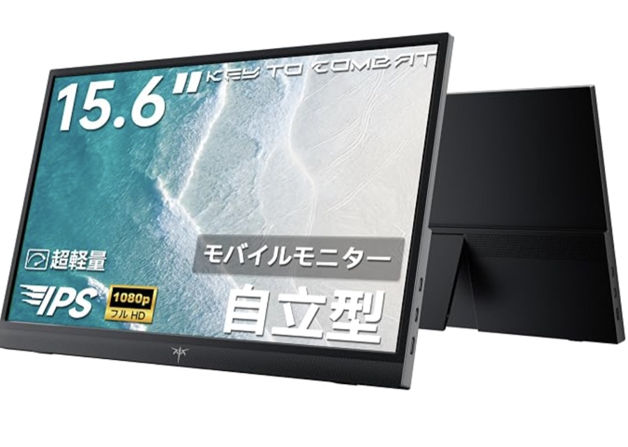

家電・ガジェット特集
——40本の比較記事まとめ

家電・ガジェットまわりで、これまで比較してきた記事を40本まとめました。気になるところから読んでみてください。新しい記事が増えたら、ここにも追加していきます。
-
2026.11.21 USBマイク、在宅会議向けの手軽な1本から配信向けのメーカー品まで——1日あたり約¥1.7〜¥8.2、7点を比較
USBマイク7点を、PC用のUSBコンデンサーマイク、メーカー品のHyperX、スマホ用の3.5mm接続、USB/XLR両対応のタイプに分けて整理。毎日3年使う前提の1日あたりと、レビュー実績で比べました。
-
 2026.11.20 モニターアーム、ガス圧式・スプリング式・自立式——1日あたり約¥3.5〜¥13.5、6点を比較
2026.11.20 モニターアーム、ガス圧式・スプリング式・自立式——1日あたり約¥3.5〜¥13.5、6点を比較モニターアーム6点を、ガス圧式・スプリング式・自立式のタイプと対応サイズ・耐荷重に分けて整理。毎日3年使う前提の1日あたりと、レビュー実績で比べました。
-
 2026.11.18 Webカメラ、ロジクールと1,000円台の無名ブランドで比べる——1回あたり約¥2.4〜¥10.7、6点を比較
2026.11.18 Webカメラ、ロジクールと1,000円台の無名ブランドで比べる——1回あたり約¥2.4〜¥10.7、6点を比較オンライン会議や配信用のWebカメラ6点を、ロジクールC920naと1,000〜3,000円台のフルHDモデルに分けて整理。週5回3年使った場合の1回あたりと、レビュー実績で比べました。
-
 2026.11.17 HDMIケーブル、4K対応の定番と8K対応のHDMI 2.1で比べる——1日あたり約¥0.4〜¥1.2、6点を比較
2026.11.17 HDMIケーブル、4K対応の定番と8K対応のHDMI 2.1で比べる——1日あたり約¥0.4〜¥1.2、6点を比較Ver.2.0の4K対応・HDMI 2.1の8K対応・超極細・USB-C変換の6点を比較。3年毎日使った場合の1日あたりと、レビュー実績、規格と形の違いで整理しました。
-
 2026.11.17 デスクライト、充電式コードレスと据え置きスタンドで比べる——1日あたり約¥2.0〜¥3.2、5点を比較
2026.11.17 デスクライト、充電式コードレスと据え置きスタンドで比べる——1日あたり約¥2.0〜¥3.2、5点を比較充電式コードレス・クリップ式・据え置きスタンドの5点を比較。3年毎日使った場合の1日あたりと、レビュー実績、電源の方式の違いで整理しました。
-
 2026.11.17 モバイルバッテリー、10000mAhの定番から40000mAhまで——1日あたり約¥2.2〜¥6.5、7点を比較
2026.11.17 モバイルバッテリー、10000mAhの定番から40000mAhまで——1日あたり約¥2.2〜¥6.5、7点を比較10000mAh前後の小型品5点と、22800mAh・40000mAhの大容量2点を比較。2年毎日使った場合の1日あたりと、容量表記のある商品の1000mAhあたり、レビュー実績で整理しました。
-
 2026.11.13 モニター台、1日あたり約¥2.3〜¥6.4——木製・高さ調整・電源付き・スチール5点を比較
2026.11.13 モニター台、1日あたり約¥2.3〜¥6.4——木製・高さ調整・電源付き・スチール5点を比較楽天市場の机上のモニター台5点を、キーボード収納付きの木製・高さ3段階の木製・USBコンセント付き・高さ調整式・日本製スチールのタイプ別に比較。3年毎日使う仮定の1日あたりで、¥2,470の木製から¥6,980の電源付きまで約2.8倍の差でした。
-
 2026.10.27 モニターライト（スクリーンバー）、バー型かクリップ型か——1日あたり約¥2〜¥5、6点を比較
2026.10.27 モニターライト（スクリーンバー）、バー型かクリップ型か——1日あたり約¥2〜¥5、6点を比較Quntis・Iseebiz・ukachiなど、楽天市場のモニター掛け式ライト6点を比較。価格¥2,680〜¥5,680、毎日3年使う仮定の1日あたり約¥2.4〜¥5.2と、バー型・クリップ型の違い、レビュー実績で整理しました。
-
 2026.10.22 足元パネルヒーター、折りたたみ・ラウンド・7面・リモコン付きで選ぶ——1回あたり約¥20〜¥30、5点を比較
2026.10.22 足元パネルヒーター、折りたたみ・ラウンド・7面・リモコン付きで選ぶ——1回あたり約¥20〜¥30、5点を比較足元パネルヒーター5点を比較。価格¥5,980〜¥8,980、折りたたみ式・ラウンド型・7面タイプ・リモコン付きのタイプ違い、3シーズン使う想定の1回あたりの価格とレビュー実績を整理しました。
-
 2026.10.21 リストレスト付きマウスパッド、低反発・エレコム・クッションセットで選ぶ——6点を比較
2026.10.21 リストレスト付きマウスパッド、低反発・エレコム・クッションセットで選ぶ——6点を比較リストレスト付きマウスパッド6点を比較。価格¥1,000〜¥2,500、大型・小さめ・エレコム COMFY・オフィスクッションセットといった違いと、1日あたりの価格、レビュー実績を整理しました。
-
 2026.10.14 USB充電器、ケーブルセット・65W多ポート・100W 4ポートで選ぶ——1日あたり約¥1.4〜¥11.0、6点を比較
2026.10.14 USB充電器、ケーブルセット・65W多ポート・100W 4ポートで選ぶ——1日あたり約¥1.4〜¥11.0、6点を比較USB充電器を、ケーブル付きの手軽なセット、65Wの3ポート型、100Wの4ポート型のタイプ違いで計6点比較。価格帯¥1,000〜¥7,999、2年毎日使う想定の1日あたりとレビュー実績で整理しました。
-
 2026.10.14 卓上加湿器、小型350mlから5Lのハイブリッド式まで——1日あたり約¥13〜¥45、7点を比較
2026.10.14 卓上加湿器、小型350mlから5Lのハイブリッド式まで——1日あたり約¥13〜¥45、7点を比較卓上加湿器を、350mlの小型から2.5L・5Lの大容量、ハイブリッド式まで7点で比較。1シーズン150日使う想定の1日あたりと、レビュー実績で整理しました。価格帯は¥1,880〜¥6,780です。
-
 2026.10.14 ワイヤレスキーボード、標準・折りたたみ・マウスセットで選ぶ——1日あたり約¥3.5〜¥9.5、6点を比較
2026.10.14 ワイヤレスキーボード、標準・折りたたみ・マウスセットで選ぶ——1日あたり約¥3.5〜¥9.5、6点を比較ワイヤレスキーボードを、標準のBluetooth型・折りたたみ型・マウスセットのタイプ違いで計6点比較。2年毎日使う想定の1日あたりと、レビュー実績で整理しました。価格帯は¥2,580〜¥6,960です。
-
 2026.10.14 スマホ用三脚、自撮り棒兼用・3WAY雲台・170cmで選ぶ——1日あたり約¥3〜¥11、6点を比較
2026.10.14 スマホ用三脚、自撮り棒兼用・3WAY雲台・170cmで選ぶ——1日あたり約¥3〜¥11、6点を比較スマホ用三脚を、自撮り棒兼用の軽量タイプから3WAY雲台の3段伸縮タイプまで6点で比較。1年毎日使う想定の1日あたりと、レビュー実績で整理しました。価格帯は¥1,000〜¥3,982です。
-
 2026.10.12 ホットサンドメーカー、電気式と直火式で選ぶ——1回あたり約¥29〜¥106、5点を比較
2026.10.12 ホットサンドメーカー、電気式と直火式で選ぶ——1回あたり約¥29〜¥106、5点を比較ホットサンドメーカーを、電気式3点（レコルト2点・ビタントニオ）と火にかけるタイプ2点の計5点で比較。価格帯¥2,980〜¥11,000、週2回使う想定の1回あたりとレビュー実績で整理しました。
-
 2026.10.12 料理用温度計、丸洗いタイプからタニタ・コーヒー用まで——1回あたり約¥9〜¥21、5点を比較
2026.10.12 料理用温度計、丸洗いタイプからタニタ・コーヒー用まで——1回あたり約¥9〜¥21、5点を比較料理用温度計を、本体丸洗いタイプ2点・タニタ・ペン型・コーヒー用の計5点で比較。価格帯¥1,390〜¥3,300、週3回使う想定の1回あたりとレビュー実績で整理しました。
-
 2026.10.12 キッチンスケール、1g単位と0.1g単位で選ぶ——1回あたり約¥3.5〜¥21.7、7点を比較
2026.10.12 キッチンスケール、1g単位と0.1g単位で選ぶ——1回あたり約¥3.5〜¥21.7、7点を比較料理用のデジタルキッチンスケールを、1g単位と0.1g単位の違い、量れる上限、週3回使う想定の1回あたりと、レビュー実績で整理。タニタ4モデルと手頃な3点を比べました。
-
 2026.10.11 ワイヤレス充電器、3in1スタンド・MagSafe型・車載で選ぶ——1日あたり約¥6.8〜¥13.6、7点を比較
2026.10.11 ワイヤレス充電器、3in1スタンド・MagSafe型・車載で選ぶ——1日あたり約¥6.8〜¥13.6、7点を比較スマホ・イヤホン・時計をまとめて充電できる3in1スタンドから、MagSafe型、Anker、車載ホルダーまで7点を比較。1年毎日使う想定の1日あたりと、レビュー実績で整理しました。
-
 2026.10.11 電源タップ、USBポートと個別スイッチ・口数で選ぶ——1日あたり約¥2〜¥3.5、6点を比較
2026.10.11 電源タップ、USBポートと個別スイッチ・口数で選ぶ——1日あたり約¥2〜¥3.5、6点を比較styledmart・sybr17・MSCIEN・サンワダイレクト・Fargoの電源タップ6点を比較。USB付き・個別スイッチ・PD30W対応のタイプ違いを、3年使った場合の1日あたりと1口あたり、レビュー実績で整理しました。
-
 2026.10.10 USBハブ、バスパワー・セルフパワー・LAN付きで選ぶ——1日あたり約¥1〜¥6、6点を比較
2026.10.10 USBハブ、バスパワー・セルフパワー・LAN付きで選ぶ——1日あたり約¥1〜¥6、6点を比較USBハブを、バスパワーの4ポート型・有線LAN付き・ACアダプタ付きのセルフパワー型のタイプ違いで6点比較。3年使った場合の1日あたり、1ポートあたりの価格、レビュー実績で整理しました。
-
 2026.10.05 ノートパソコンスタンド、折りたたみ式で選ぶ——1日あたり約¥3.1〜¥14.5、7点を比較
2026.10.05 ノートパソコンスタンド、折りたたみ式で選ぶ——1日あたり約¥3.1〜¥14.5、7点を比較楽天市場の折りたたみ式ノートパソコンスタンド7点を、BoYata・Z型アルミ・タブレット兼用などの違いと、1年毎日使った場合の1日あたり、レビュー実績で整理しました。
-
 2026.10.05 デスクマット、PUレザー・フェルト・木目調で選ぶ——1日あたり約¥3.2〜¥7.6、6点を比較
2026.10.05 デスクマット、PUレザー・フェルト・木目調で選ぶ——1日あたり約¥3.2〜¥7.6、6点を比較楽天市場のデスクマット6点を、PUレザー・フェルト・木目調という素材の違いと、1年毎日使った場合の1日あたり、レビュー実績で整理しました。
-
 2026.10.05 スマホスタンド、折りたたみ・タブレット兼用・三脚タイプで選ぶ——1日あたり約¥2.9〜¥10.9、6点を比較
2026.10.05 スマホスタンド、折りたたみ・タブレット兼用・三脚タイプで選ぶ——1日あたり約¥2.9〜¥10.9、6点を比較スマホスタンド6点を、折りたたみ式・タブレット兼用・マグネット三脚タイプの違いと、1年毎日使った場合の1日あたり、レビュー実績で整理しました。
-
 2026.10.02 ケーブルクリップ、マグネット式とドロップ式で選ぶ——1個あたり約¥56〜¥495、4点を比較
2026.10.02 ケーブルクリップ、マグネット式とドロップ式で選ぶ——1個あたり約¥56〜¥495、4点を比較マグネット式・ドロップ式・ケーブルタートルを4点比較。1個あたり約¥56〜¥495、レビューは60〜118件です。
-
 2026.09.30 ゆで卵メーカー、レンジ式と電気式で選ぶ——6点を1個あたりの本体価格で比較
2026.09.30 ゆで卵メーカー、レンジ式と電気式で選ぶ——6点を1個あたりの本体価格で比較電子レンジ式5点と電気式1点を比較。最大4個のレンジ式は1個あたり約¥270〜¥430、価格帯は¥1,078〜¥3,300です。
-
 2026.09.30 たこ焼き器、専用機とホットプレート兼用タイプで6点を比較
2026.09.30 たこ焼き器、専用機とホットプレート兼用タイプで6点を比較たこ焼き専用の着脱プレート式から、たこ焼きプレート付きのホットプレートまで6点を比較。穴数やプレートの構成が分かれ、価格帯は¥2,981〜¥15,800です。
-
 2026.09.30 充電式カイロ、薄型と10000mAh大容量で6点を比較
2026.09.30 充電式カイロ、薄型と10000mAh大容量で6点を比較充電式カイロ6点を比較。薄型・コンパクトタイプと10000mAhの大容量タイプ、温度調整や液晶表示の違いを整理しました。価格帯は¥2,160〜¥5,680です。
-

-
 2026.09.16 【推し色特集】シルバーのワイヤレスマウス——3ブランドを比較
2026.09.16 【推し色特集】シルバーのワイヤレスマウス——3ブランドを比較ロジクール・エレコム・バッファローから、シルバーのワイヤレスマウスを集めました。接続方式・質感・価格帯の違いで3ブランドを比較しています。
-
 2026.09.16 【推し色特集】ブラックのワイヤレスマウス——3ブランドを比較
2026.09.16 【推し色特集】ブラックのワイヤレスマウス——3ブランドを比較ロジクール・エレコム・バッファローから、黒いワイヤレスマウスを集めました。接続方式・サイズ・価格帯の違いで3ブランドを比較しています。
-
 2026.09.16 【推し色特集】ブラックのオーブントースター——3ブランドを比較
2026.09.16 【推し色特集】ブラックのオーブントースター——3ブランドを比較コイズミ・アラジン・象印から、黒いオーブントースターを集めました。発熱方式・庫内の広さ・価格帯の違いで3ブランドを比較しています。
-
 2026.09.16 【推し色特集】ブラックの電気ケトル——3ブランド4点を比較
2026.09.16 【推し色特集】ブラックの電気ケトル——3ブランド4点を比較ティファール・象印・タイガーから、黒い電気ケトルを集めました。容量・温度調節・価格帯の違いで3ブランド4点を比較しています。
-
 2026.09.16 【推し色特集】ホワイトのワイヤレスマウス——3ブランドを比較
2026.09.16 【推し色特集】ホワイトのワイヤレスマウス——3ブランドを比較ロジクール・エレコム・バッファローから、白いワイヤレスマウスを集めました。接続方式・形状・価格帯の違いで3ブランドを比較しています。
-
 2026.09.15 【推し色特集】ホワイトのフードプロセッサー——3ブランドを比較
2026.09.15 【推し色特集】ホワイトのフードプロセッサー——3ブランドを比較パナソニック・クイジナート・レコルトから、白いフードプロセッサーを集めました。容量・刃の構造・価格帯の違いで3ブランドを比較しています。
-
 2026.09.15 【推し色特集】ホワイトのコードレスクリーナー——4ブランド4点を比較
2026.09.15 【推し色特集】ホワイトのコードレスクリーナー——4ブランド4点を比較アイリスオーヤマ・ツインバード・山善・マキタから、白いコードレススティッククリーナーを集めました。吸引方式・重さ・電源方式の違いで4ブランド4点を比較しています。
-
 2026.09.15 【推し色特集】ホワイトの3合炊き炊飯器——4ブランド4点を比較
2026.09.15 【推し色特集】ホワイトの3合炊き炊飯器——4ブランド4点を比較タイガー・象印・アイリスオーヤマ・ツインバードから、白い3合炊き炊飯器を集めました。加熱方式・機能・価格帯の違いで4ブランド4点を比較しています。
-
 2026.09.15 【推し色特集】ホワイトのオーブントースター——4ブランド4点を比較
2026.09.15 【推し色特集】ホワイトのオーブントースター——4ブランド4点を比較アラジン・象印・山善・コイズミから、白いオーブントースターを集めました。発熱の仕組み・庫内の広さ・価格帯の違いで4ブランド4点を比較しています。
-
 2026.09.15 【推し色特集】ホワイトの電気ケトル——4ブランド5点を比較
2026.09.15 【推し色特集】ホワイトの電気ケトル——4ブランド5点を比較タイガー・ティファール・象印・レコルトから、白い電気ケトルだけを集めました。容量・沸かす速さ・デザインの違いで4ブランド5点を比較しています。
-
 2026.09.11 AIボイスレコーダー、本体スタイルとAI機能で6点を比較
2026.09.11 AIボイスレコーダー、本体スタイルとAI機能で6点を比較定番PLAUDのペン型3モデルとウェアラブル型、他ブランドの2機種を含む計6点を、本体のスタイルとAI機能・価格で比較しました。
-

2026.08.17 持ち運べるサブモニター、7千円台から5万円まで——6点を比較ノートPCの横にもう一枚。重さ・解像度・電源の取り方・保証の違いで、15.6インチを中心に6点を比較。1点は実際に使っています。
他のジャンルの記事はトップページのカテゴリからも探せます。